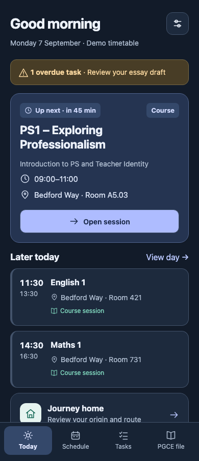

Timetable UI — before and afterVisual audit · 10 September 2026
A clearer timetable, at every step
Actual current UI on the left. Proposed design on the right. Synthetic data throughout. These are visual specifications, not implemented app changes.
Dark-theme direction
Supplemental proposed screen. Retain semantic colours with independently checked dark-theme contrast.
